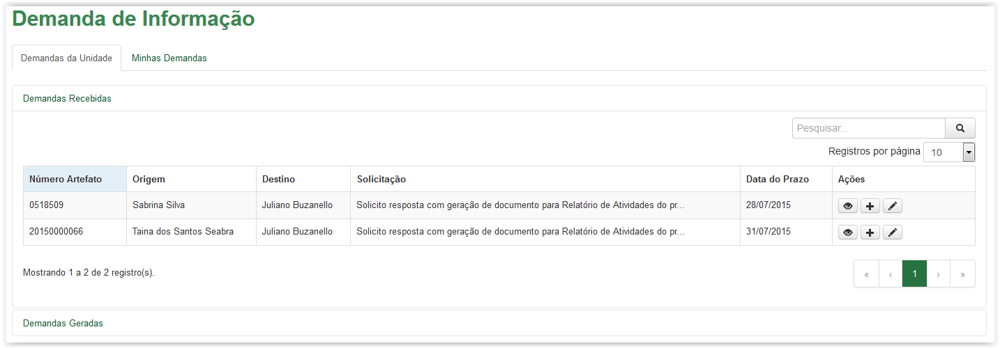
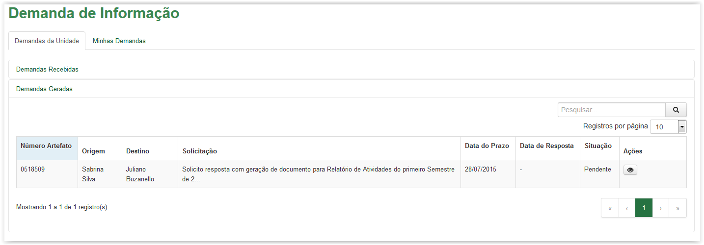

Acompanhar Demanda de Informação
Todas as demandas geradas para a Unidade serão enviadas para esta área e poderão ser atendidas por qualquer um lotado naquela Unidade.
As demandas recebidas são todas aquelas recebidas pela Unidade e deverão ser executadas suas ações de resposta ou geração de nova demanda.
Gerar uma nova demanda significa que ao receber uma demanda, poderemos gerar uma nova demanda a uma terceira pessoa ou Unidade para que ela possa nos responder e assim possamos ter subsídios suficientes para responder a demanda "original".

Tela Demanda de Informação - Aba Demandas Recebidas
As demandas geradas são todas aquelas geradas na Unidade, permitindo ao usuário a sua visualização detalhada. Além disso, é possível verificar a situação da demanda exibindo "Pendente" ou "Finalizada".

Tela Demanda de Informação - Aba Demandas Geradas
Created with the Personal Edition of HelpNDoc: Full-featured EBook editor